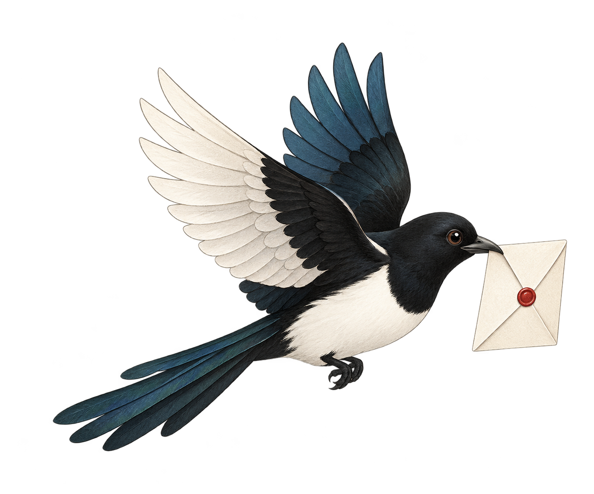

生成后填入微信，由你发送
在微信中打开一个会话
将发送当前会话近 7 天、最多 80 条可读消息及回复要求，并参考本会话最多 12 条相关历史原文、8 条已发送改稿与口吻偏好。
本机代理可能转交外部模型；本次授权该会话使用此服务，点击按钮后才处理。
虚构口吻示例 · 不连接微信或模型
尚未学习
0 / 500
只应用于当前会话，选择后立即保存。
学习时会从当前账号已导出的记录中选取本人原文，最多 240 条、20,000 字；不代表全历史。只总结表达习惯，不训练模型权重。
清空只移除助手前情与已学改稿，保留口吻设置和微信原文。匹配明确的已发送修改才作为示例；仅填入、复制或取消不会算已发送。
固定重要前情，下次按需参考。此处显示固定原文及最近 16 条。
记录与改稿核对在本机完成。点击生成时，才将相关历史、偏好和表达示例交给已配置模型。
启用后，自动参考你的口吻和本会话前情，生成并发送。保持微信在前台，只处理当前打开的指定私聊，连续消息先等 5 秒；其他联系人、群聊和公众号保持手动。
遇到需要你决定的事、未解析内容或手写输入，会停下来交给你。顶部「暂停全部」可随时接管。发送结果不明确时不会自动重发。
只处理启用之后的新消息。重新启用前，请先查看微信里上次未确认的发送。启用期间的新消息会使用已授权的模型，最多每会话 12 次发送尝试／小时。